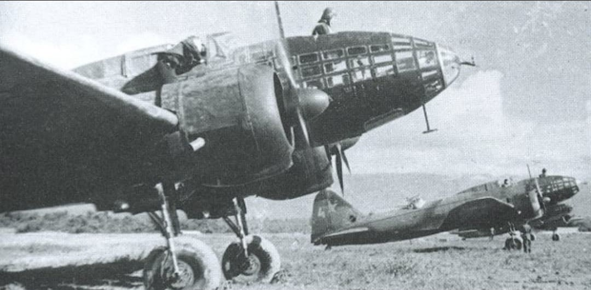
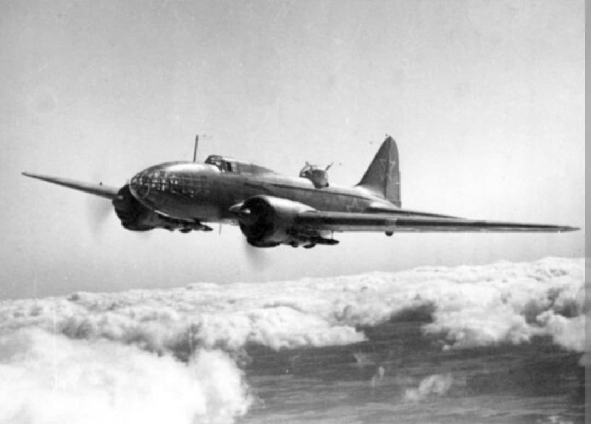
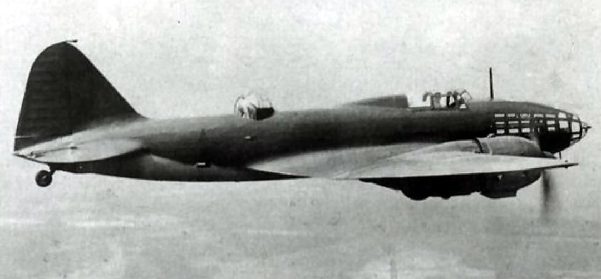

Le pilier des missions de bombardement lourd, d'attaque nocturne et de torpillage naval soviétique

L’Ilyushin Il-4 est un bombardier bimoteur lourd à long rayon d'action conçu par le bureau d'études dirigé par Sergueï Ilyouchine. Évolution directe du DB-3, l'Il-4 a constitué l'épine dorsale de la force de bombardement stratégique et de l'aviation navale de l'Union soviétique tout au long de la Seconde Guerre mondiale.
Capable de mener des frappes nocturnes en profondeur, des missions de torpillage en mer Baltique et en mer Noire, ou même de larguer des bombes sur Berlin dès l'été 1941, l'Il-4 s'est imposed comme une machine robuste et endurante, pilier incontournable de la VVS.
Spécifications de référence de l'Ilyushin Il-4 (versions de série de 1942–1944) :

L'Il-4 est le fruit de l'optimisation du DB-3, dont la production souffrait de défauts de masse et d'autonomie insuffisante. Pour y remédier, Ilyouchine introduisit des modifications majeures :

Dès le mois d'août 1941, alors que l'Armée allemande progresse à marche forcée vers Moscou, ce sont des bombardiers Il-4 (partant des îles baltiques d'Ösel) qui mènent une série de **raids de représailles audacieux en bombardant Berlin**, sapant le moral du haut commandement nazi qui affirmait que la capitale était hors d'atteinte.
En outre, l'Il-4 a joué un rôle stratégique majeur au sein de l'aviation de la Marine soviétique (sous la désignation **Il-4T**). Armés de torpilles lourdes, ces bombardiers ont intercepté et coulé de nombreux navires de transport et de guerre allemands ravitaillant les forces de l'Axe dans la mer Baltique et les convois de l'Arctique.
Page du Musée HOP WW2 – Ilyushin Il-4